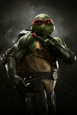

C'est la tête brûlée des quatre frères.
Bien qu'il s'oppose souvent aux ordres de Leonardo, ce qui leur vaut de très nombreuses disputes, il est toujours présent pour aider ses frères.
Son nom vient également d'un artiste de la Renaissance italienne, Raphaël.
Ce fut la tortue qui connut le plus rude changement avec le passage à l’écran, dans le premier dessin animé, en 1987.
Étant d’un tempérament violent à l’origine, il devient une tortue aimant l’humour.
Il porte un bandeau rouge et utilise deux sais pour arme.